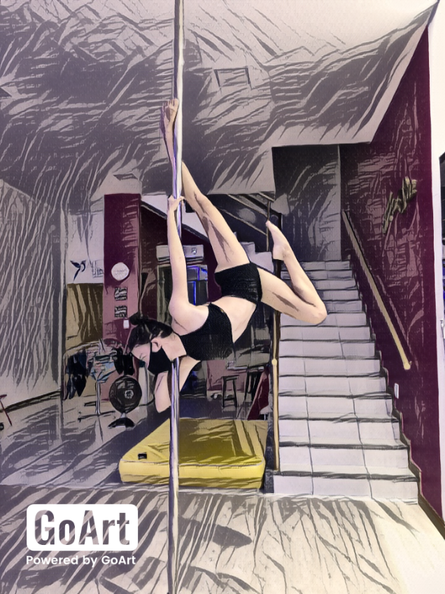
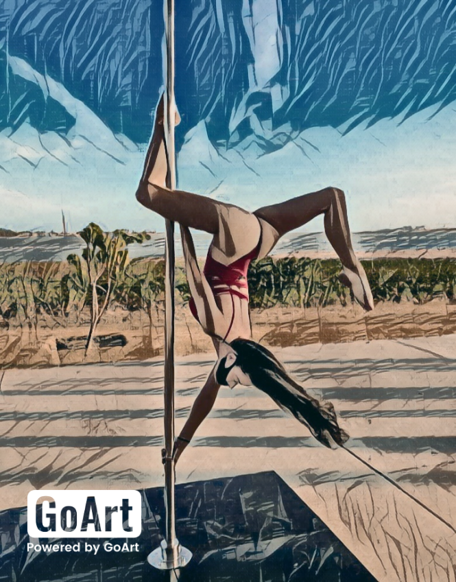

Ein Brief an meine Frau


Ray, começando queria desejar feliz aniversário, mas essa carta não é como nas outras, resolvi fazer algo diferente: lembrar de alguns momentos gostosos nossos para aflorar na memória e sentir um prazer ou sensação lendo a carta. Dos mais recentes quero lembrar da nossa viagem, nossa primeira viagem juntos, comemos bastante, aquela cachoeira com uma água doce e gelada com as pancadas nas costas da gente.. foi um momento muito especial pra gente como casal e pode ter certeza que teremos vários e vários outros momentos assim 🏞️. Lembrar de TODOS os nossos momentos de lanches: seja bk, açaÃ, pizza, chocolates e principalmente o TEMAKI DO HASHI kk sinto que esse lugar é o nosso foco e é onde mais comemos juntos.. tem algo especial sem ser a comida (os momentos contigo) 🍣. Pausa para momento ruim: esfihas, pizza do matheus kkk 🍕. Imaginar tão forte e sensÃvel o sexo gostoso que nós fazemos, é algo que liga e une tanto a gente, algo tão profundo de verdade que só nós dois sabemos e temos, eu amo tanto beijar você, eu sinto que é isso que tem liberado mais hormônios e o fogo tá vindo queimando ❤️‍🔥. Não vamos esquecer das séries que já terminamos e dos filmes que já assistimos, uma vasta lista de 70% ruim ou estranho kk mas faz parte, quando os filmes são ruins nós fazemos dele engraçado e temos nosso momento juntos, eu quero sempre assistir e ter esses momentos contigo (mesmo com os filmes ruins) 🎥. Momento especial pros nossos filhos, que mesmo miando sem parar ou fugindo da gente kk eu não vejo a nossa vida sem eles, esses peludinhos são uma peça chave pro nosso relacionamento, é um vÃnculo de famÃlia, nesse momento feche os olhos e lembre de todos os momentos carinhosos que tivemos juntos 🤤 / 😴 / 🥴 / 🐈‍⬛ / 👒. Ray, agradeço por ser essa mulher incrÃvel, nossos momentos são os melhores juntos, quero sempre estar contigo. Ich liebe dich 🫰!